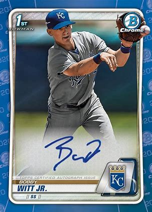

While growing up I was always a quiet kid, finding comfort in my imagination. One of these ways I passed time was collecting cards. It started with baseball cards when I was around 7 ish. It then stepped into football then Pokemon. I would pretend to have groups and make them fight each other. Now it seems most people who have cards just keep them on shelfs to collect dust.
During my prime years of collecting cards there were always some that stood out more then others. I liked the average Pokemon and football, but baseball was different. There was an interest I had in baseball cards and that sport specifically. There was something about the shots on the cards; they were always so elegant. More specifically Bowman baseball cards were the gems of my collection.
Now the card collecting community has shifted. One of the main factors being covid-19. During the outbreak of the virtus the whole world was stuck inside. With everyone having so much free time on their hands the market greeted them. Views in pack openings and card unboxings skyrocketed. Not just this the age range seemed to increase as well. Now there are collectors who start as young as the age of 4! In conclusion the card community seems to be increasing and seems to be as popular as before even.
Above is a current 2024 baseball card pack. The design is slightly different from last year. It seems topps repeats this action through every single year. Compared to other brands such as Bowman who’s cards look almost identical to the original style.